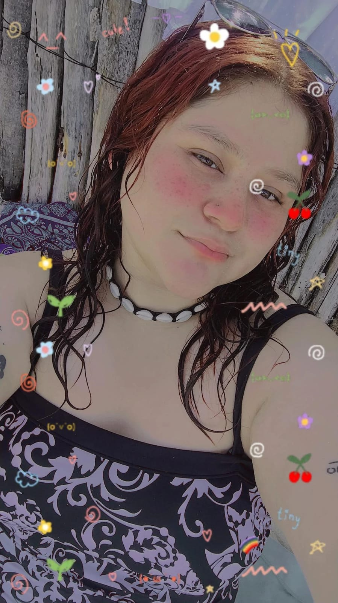

💞💞Quien es la cosita mas hermosa y tierna en este mundo💞💞
💌¿Quién es ella? Es la encantadora chica que cumple años hoy, mi Terroncito Mitzi Zunamy.Desde que llegaste a mis días, has hecho que mi corazón sienta un millón de emociones cada día, y en serio espero que disfrutes con todo tu esplendor tu cumpleaños número 20. En serio, para mí es un hermoso regalo que estés en mi vida y espero poder compartir todos los próximos cumpleaños a tu lado, llenando de mimos a mi chica.💌
🥳🥳Por eso, te deseo un muy feliz cumpleaños,Mi Terroncito.🥳🥳
💑Yo me encargaré en el futuro de hacer todos tus cumpleaños especiales, porque eres especial en mi corazón y en mi vida. Porque te amo con toda la fuerza de mi corazón y lo que más deseo es que seas feliz cada mañana al despertar a mi lado.💑
🦋Razones por lo que la Amo🦋
- Es bastante tierna.
- Cuando se sonroja sus cachetes son rojos como un tomatito.
- Es muy estudiosa y diligente, admiro eso de ella.
- Es preciosa en muchos sentidos aveces es como ver un cielo estrellado y otras como ver un radiante amanecer.
- Sus ojos son divinos espejos, la primera vez que nos vimos por llamada y ver la forma en que me miraban hacian saltar de alegria mi corazon.
- Su sonrisa sin duda.
- Es muy comunicativa con lo que quiere y eso me facina.
- Que seamos igual de hormonales, es un deleite.
- sin duda su precioso corazon que prometo proteger toda la vida.